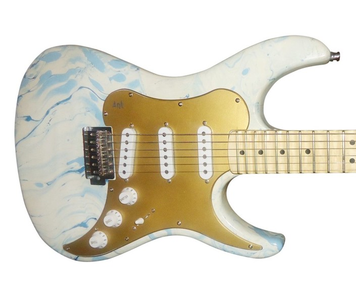
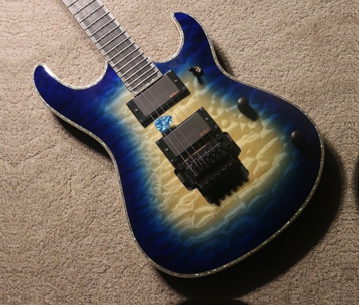
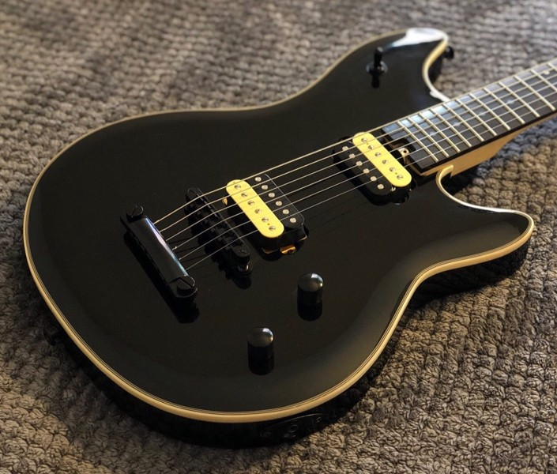
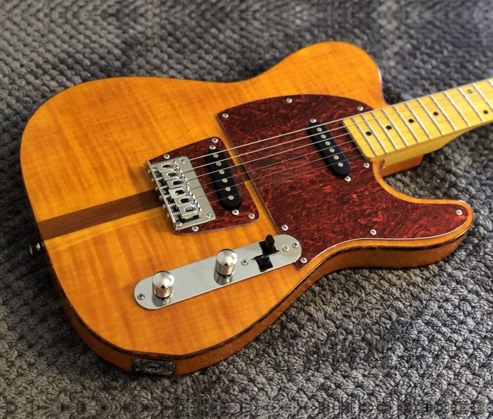

Projects
Building things
I’ve been lucky to found, co-found, and help operate companies in both music tech and biotech, such as Ank Guitars and Valted Seq. Most of my ventures didn’t make it though :)
After breaking things a lot as a kid, my parents required me to learn how to fix them. Later, when I wanted to learn guitar, the natural next step was to make my own. After many attempts with scrap wood and YouTube tutorials, I figured out how to make guitars and then later scaled to running Ank Guitars. Together, we made custom guitars for professional musicians, including new designs for those with physical disabilities.
Some of the ones I worked on by hand are below (more pictures at 500px).




Music
I play guitar and post on YouTube sometimes.
Content creation
I’ve created YouTube and TikTok channels solo and with others. My favorite series is where I interview people about their lives (like Humans of New York) but fully anonymized. Some of those and my comedy videos have gone viral, with 30 million+ combined views. Let me know if you can find em :)
I’ve also edited videos for radio shows’ channels, including interviews with presidents of several countries.
Dogus
The three floofy guys on the front page are our family dogs (we call them “dogus,” like “dough-goo-s”): Kodie, Brodie, and Oshie. The event pages below are auto-triggered by weather and holidays in Palo Alto, CA, and are somewhat inspired by Pokémon Emerald.
- Home, as it would look today
- Plain day (no weather or holiday)
- Night: dogs asleep on their beds
- Rainy day: raincoats and drizzle
- Foggy day
- Hot day
- Halloween week
- Halloween night
- Winter holidays
- Winter holidays, night
- Mealtime (12pm and 6pm)
- Treat time
- A bird visits
- Zoomies
- Tug-of-war
- Big bones: all three dogs chew
- Spring butterflies
- Butterfly lands on a nose
Things you can do on any of them:
- Tap empty ground to call the dogs over
- Tap a dog’s head to pat it
- When the blue treat bowl shows up, drag a treat out: they line up and wait until each gets one
- Double-click to throw a ball for fetch